AllThingsTalk
Outdated: this section documents The Things Network V2, which is no longer maintained. See the documentation for The Things Stack V3, or browse the V2 docs index.
AllThingsTalk Maker. Make IoT ideas happen. #
AllThingsTalk Maker is the developer platform by AllThingsTalk to rapidly connect your things and collect, visualize and use data in minutes. AllThingsTalk Maker supports your own custom binary data format which you can decode using the ABCL payload decoder. AllThingsTalk Maker is free for prototyping purposes.
Set up the integration #
Let’s say that you have a LoRaWAN device with temperature sensor and LED actuator and you want to connect it to Maker.
Good example is our LoRaWAN Rapid Development Kit with Grove sensors.
To enable your data to arrive in Maker, you’ll need to integrate TTN and Maker.
Create an account on The Things Network #
Go to The Things Network console and register an account.
Add application #
- Select Applications
- Click
+ add application - Choose Application ID, a unique identifier for your application
- Let the other fields stay on their defaults
- Click
Add application
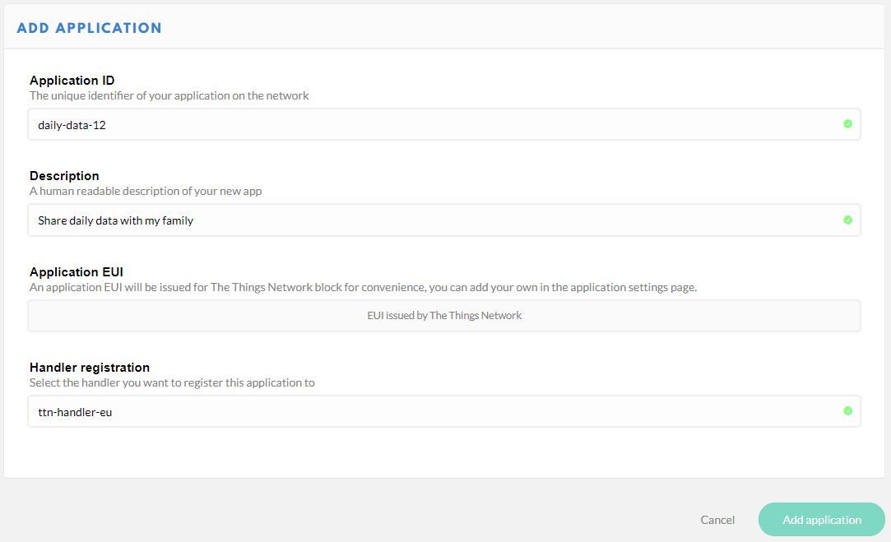
Add AllThingsTalk integration #
- Select the Integrations tab
- Click
+ add integration - Select the AllThingsTalk Maker tile
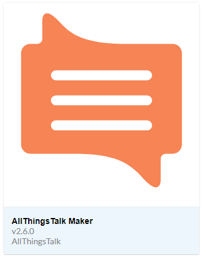
- Choose a Process ID for the integration, for example
talk-to-attalk - Select the default key as Access Key
- Click
Add integration
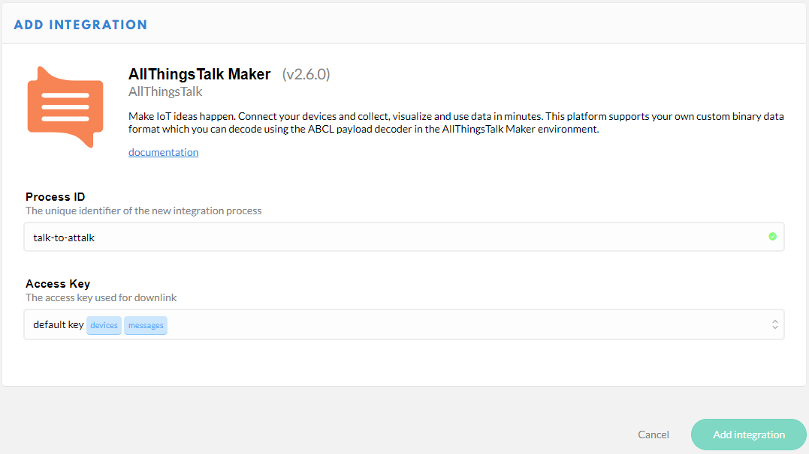
Create a LoRa Device #
- Select Devices tab
- Click
+ register device - Choose a Device ID
- Enter the Device EUI of your device, or generate one
- Click
Register
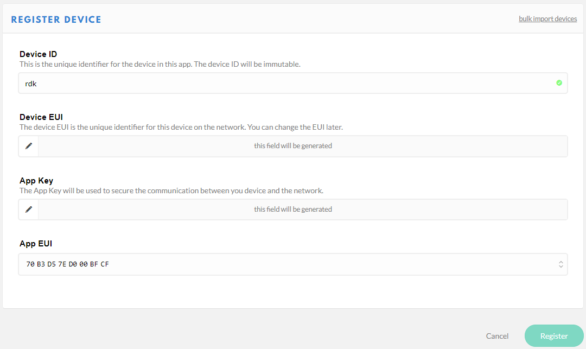
Now you have a Device registered under your Application.
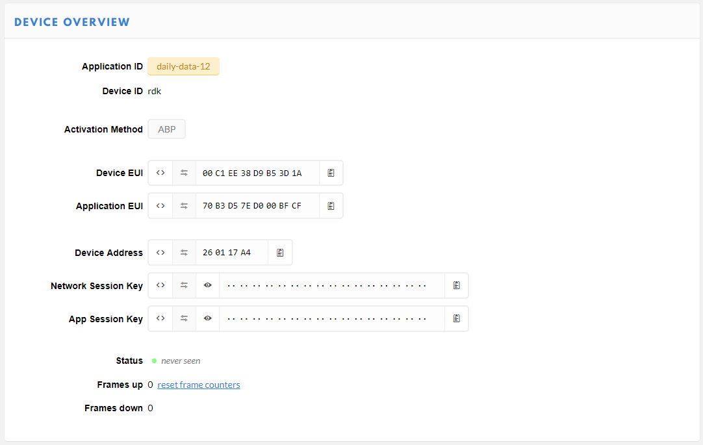
Connect the device to Maker #
Go to Maker and connect your device:
- Go to Devices
- Choose
+ CONNECT A DEVICE - Under LPWAN devices, choose Your own LoRa
- Choose The Things Network tile
- Choose a Device name, for example My RDK
- Provide an Application ID and a Device EUI from your Device in TTN console, and click
Connect
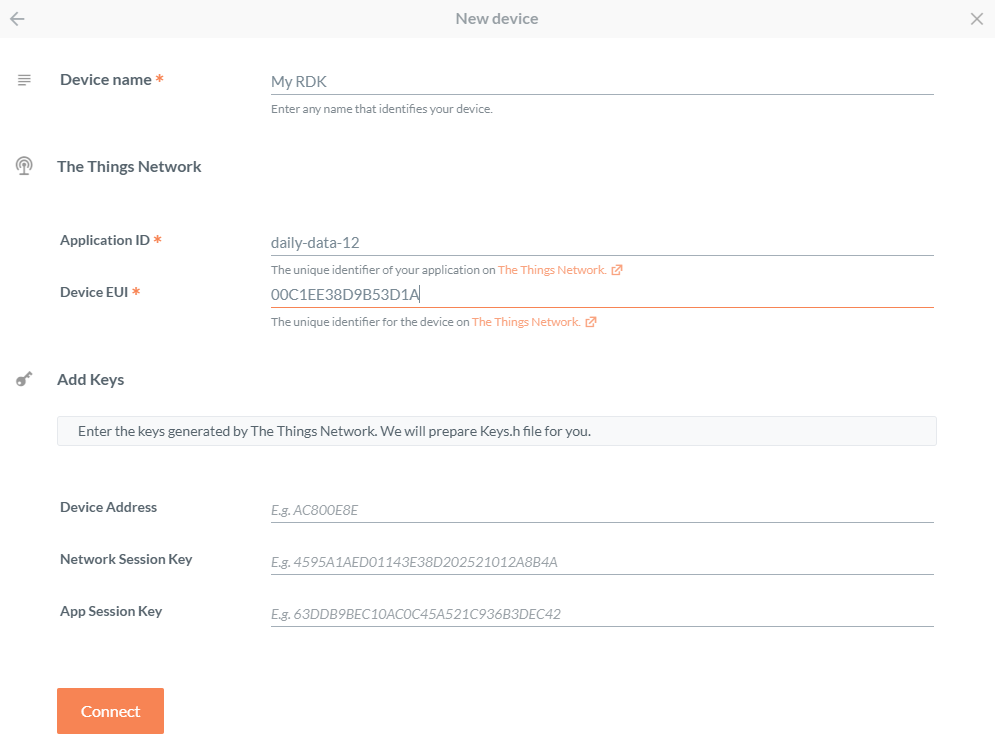
Now you’re set to send and receive LoRa data with Maker.
Receive your sensor data #
If your device reads temperature sensor’s value it can send it over TTN to your account in Maker.
Create a sensor #
- Choose
+ NEW ASSET - Create a Sensor with name
temperatureand profile typenumber
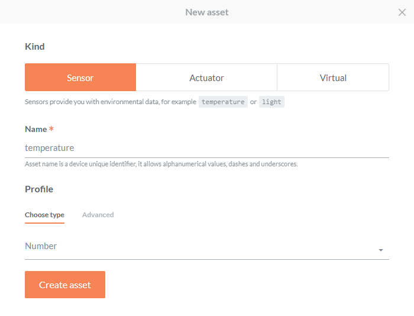
Send data from TTN console and receive it in Maker #
Before you start sending data from your device, you can test if your LoRa data arrives in Maker by sending it from TTN console.
You typically want to use a binary data format because of the limited payload size which are inherent to LPWAN networks such as LoRaWAN.
One of the payload formats Maker understands is CBOR. The message format which AllThingsTalk uses for CBOR is
{"<asset name>": <value>}.
In RDK example, your temperature sensor reads 23 degrees Celsius, and you’d like to see that value in Maker. You can use cbor.me to convert the payload to CBOR, e.g,
{"temperature": 23} translates to A1 6B 74 65 6D 70 65 72 61 74 75 72 65 17
Read more about data formats.
Now you can send the payload from TTN console and verify that it arrives in Maker:
- In TTN console, go to Device tab
- Use SIMULATE UPLINK to send a payload:
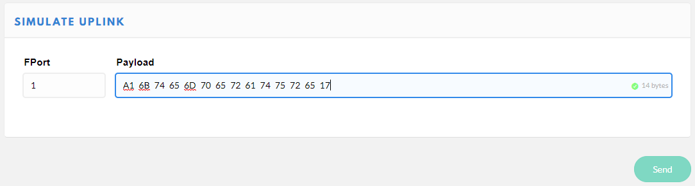
- In Maker you will see
temperaturestate updated to23
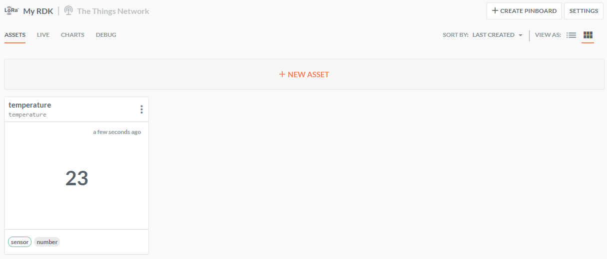
Important: LoRaWAN class ‘A’ devices can only receive payload data (downlink messages) as a response on an uplink message. The network uses the receiving slot of an uplink message to send data towards the device as typically the device will go to sleep mode to conserve energy.
Actuate your device #
Now that you’ve received your data in Maker, you can command your device from Maker, and turn on the LED. Before you do so, you can test by sending a command from Maker and receiving it in TTN console.
Create an actuator asset #
Create a LED asset which you’ll use to send a command.
- Choose
+ NEW ASSET - Create an Actuator with name
LEDand profile typeboolean
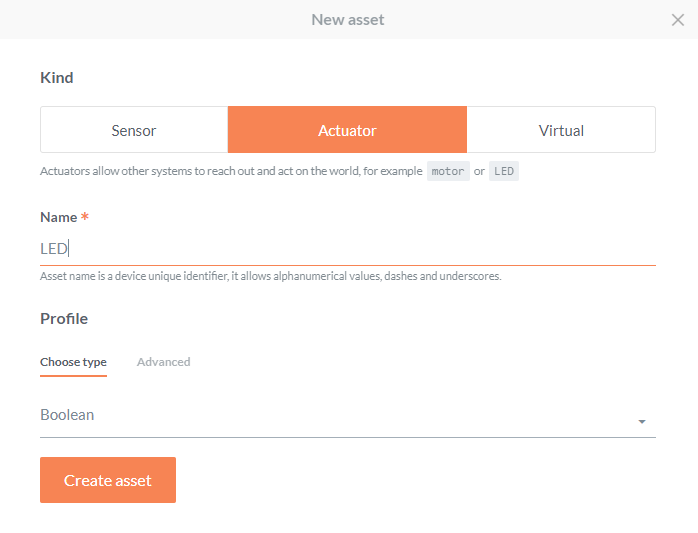
Actuate your device with CBOR #
The easiest way to test the actuations is by using CBOR. The message format which AllThingsTalk uses for CBOR is
{"<asset name>": <value>}.
You can use cbor.me to convert your payload to CBOR, e.g,
{"LED": true}translates toA1 63 4C 45 44 F5
In Maker, click on the asset LED, and from Command field send the command true:
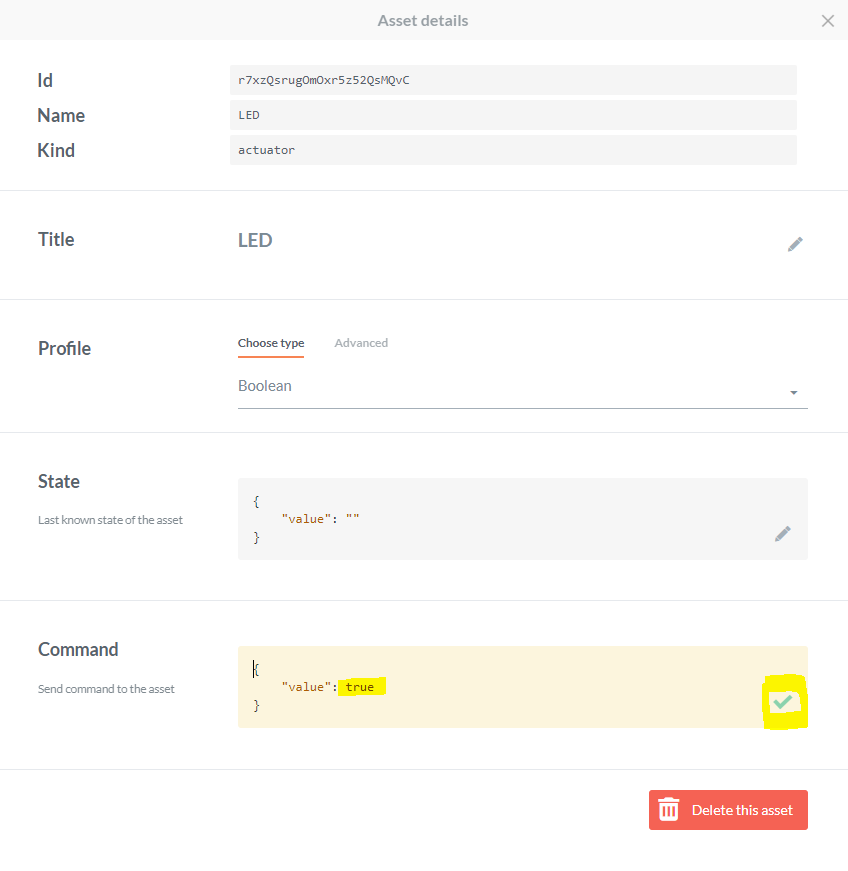
Back in TTN console go to Data screen, and you’ll see the payload A1 63 4C 45 44 F5 coming in:
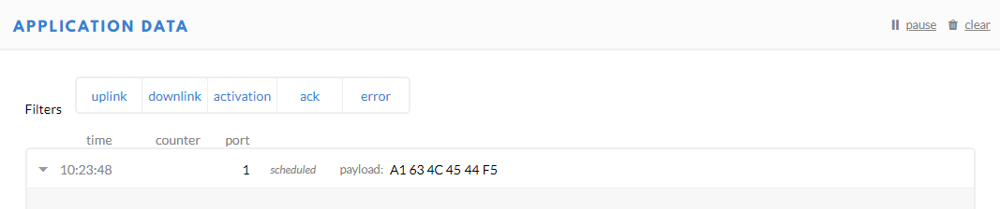
For your RDK device, you’d need to implement a logic which would turn on the LED when a value comes from Maker. For example, when value
truecomes from the assetLEDyour code will set LED state toHIGHand the LED on your device would light up.
Actuate your device with ABCL #
ABCL stands for AllThingsTalk Binary Conversion Language , and it’s a JSON-based, domain specific language, used for encoding and decoding of AllThingsTalk asset data to and from binary payloads. It gives you the freedom to specify your own decoding scheme on a per device level.
As opposed to CBOR, which sends A1 63 4C 45 44 F5 when you send true command from LED asset in Maker, with ABCL you can set a conversion which sends only FF for the same command. This results in much less data being used to achieve the same goal.
To set up a conversion in Maker, go to SETTINGS > Payload formats and check ☑️ Use ABCL to convert custom binary data.
Add a conversation which will translate the boolean state of LED actuator into the first byte of your binary payload:
{"actuate": [{"asset": "mode", "field": {"byte": 0, "type": "boolean"}}]}
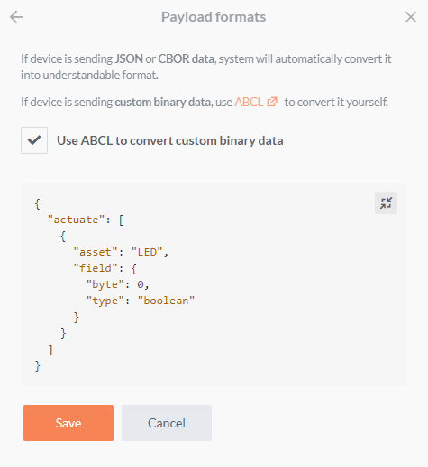
Click on the asset LED, and from Command field send the command true:
Back in TTN console go to Data screen, and you’ll see the payload FF coming in:
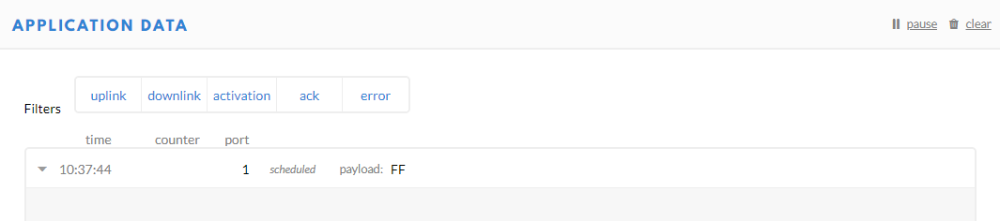
You can now use Maker to collect your temperature readings, and turn on the LED on your device.
Go ahead and make your idea happen using AllThingsTalk LoRaWAN Rapid Development Kit.